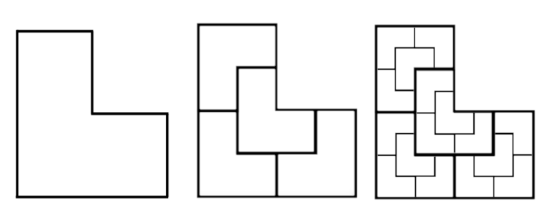
These are my solutions to the 2020 Euclid Contest by the University of Waterloo. Due to the coronavirus, the contest has been cancelled, and as of April 27, 2020, the contest problems have been released. This page is a formal write up for the solutions. It is a great place to see how math solutions are structured, however these do not provide motivation for the solutions. For a playlist to video explanations that provide a step by step guide, click here.
In summary, this year's Euclid had very many algebra problems, and all the geometry problems in this contest were also algebra heavy. Problem nine was the most interesting one for me. The problem can be solved using a recurrence relation, and requires one to think outside of the box and create a closed form for this relation. The image above depicts the construction in the problem. \(\)
Problem 1
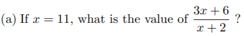
For all values of \(x \ne -2\), \(3x + 6 \over x+2 \) \(=\) \(3(x+2) \over x+2\) \(=\) \(3\). Hence, for \(x = 11\), the value of the expression is \(3\).
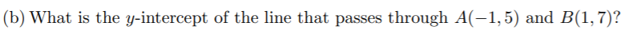
The slope of the line is \(7-5 \over 1-(-1)\) \(=1\). Since the point \((-1, 5)\) exists on the line, then the point \((-1+1, 5+1) = (0, 6)\) must as well. Thus the y-intercept is \(y = 6\).
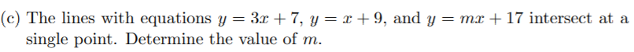
Equating the y-values of the first two lines, we obtain \(3x+7=x+9 \implies x=1\). Substituting \(x\) inside the first equation yields \(y=10\). Since the first two lines intersect at \((3, 10)\), so must the third line. Hence, \(m+17=10 \implies m=-7\).
Problem 2
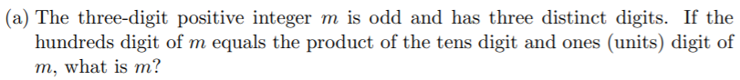
Let the three digits be \(a\), \(b\), and \(c\) respectively so that \(m=100a+10b+c\). It is given that \(a=bc\), and \(c\) is odd. Since the digits are distinct, \(c > 1\) and \(b > 1\), because otherwise \(a = b\) or \(a = c\). Now, since \(c\) is odd, \(c \geq 3\) and \(a \leq 9 \implies bc \leq 9 \implies 3b \leq 9 \implies b = 2\) or \(b = 3\). If \(b = 3\), then the smallest value \(a\) can be is \(5\), which is too large. Thus, \(b = 2\), and \(bc \leq 9\) implies that \(c \leq 4\). For odd values, the only possibility is \(c = 3\). Finally, \(a = 2 * 3 = 6\), and \(m = 623\).
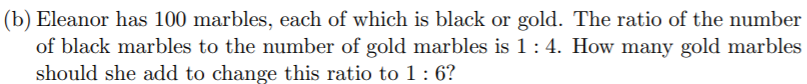
Initially, let there be \(g\) gold marbles and \(b\) black marbles. Then, \(b \over g\) \(=\) \(1 \over 4\) \(\implies 4b=g\). Since there are \(100\) marbles, \(b + g = 100 \implies 5b = 100 \implies b=20\). This means there are \(20\) black marbles and \(80\) gold marbles. Let the number of marbles that Eleanor add be \(x\). Then, \(20 \over 80 + x\) \(=\) \(1 \over 6\) \(\implies x=40\). Hence she must add \(40\) gold marbles.
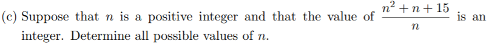
We can rewrite the expression as \(n + 1 + \)\(15 \over n\). Since \(n + 1\) is an integer, all we need is for \(15 \over n\) to be an integer. Thus \(n\) must be a divisor of \(15\). For positive integers, we can have \(n=1, 3, 5, 15\).
Problem 3
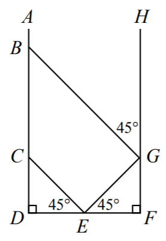
Note that triangles \(CDE\) and \(EFG\) are both isosceles right triangles. Hence, \(CD = 1\) and \(CE = GE = \sqrt2\). Now, \(CEG\) is also an isosceles right triangle since \(CE = GE\) and \(\angle CEG = 180^\circ - 45^\circ - 45^\circ = 90^\circ\).
\(BCG\) is another isosceles right triangle since \(\angle BCG = 180^\circ - \angle DCE - \angle ECG = 90^\circ\), and \(\angle CBG = BGH = 45^\circ\) (\(AD\) and \(HF\) are parallel). Finally, \(BC = 2\), and \(BD = BC + CD = 3\).
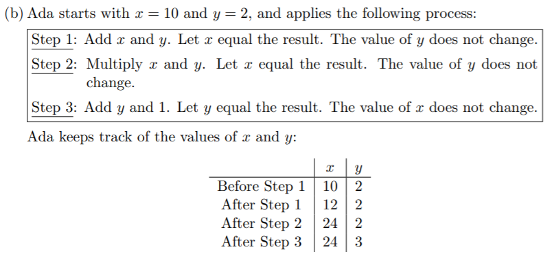
After each process, \(x\) becomes \(y(x+y)\) and \(y\) becomes \(y+1\). Starting from \(x=24\) and \(y=3\), we obtain \(x=3(24+3)=81\) and \(y=4\). Repeat this process one more time to obtain the final value of \(x=4(81+4) = 340\).
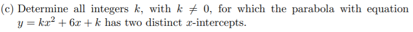
For a quadratic to have two distinct roots, its determinant must be positive. Hence \(6^2-4*k*k > 0 \implies k^2 < 9 \implies |k| < 3\). The integer values of \(k\) are \(k = -2, -1, 1, 2\).
Problem 4
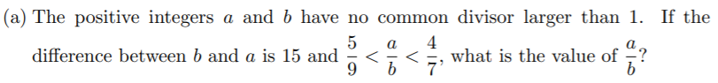
Since \(a \over b\)\(< 1\), \(b\) is larger than \(a\), and \(b = a + 15\). Breaking the inequality into two parts and substituting \(b\), we obtain \(5 \over 9\) \(<\)\(a \over a + 15\) \(\implies a >\) \(75 \over 4\) \(\implies a \geq 19\), and \(a \over a+15\) \(<\) \(4 \over 7\) \(\implies a < 20\). Hence \(a = 19\) and \(b = 19 + 15 = 34\). Then \(a \over b\) \(=\) \(19 \over 34\).
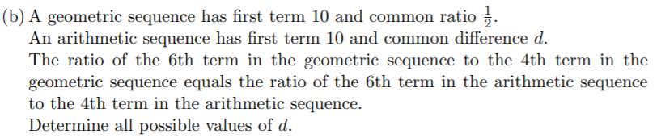
From the statement, the ratio that must hold is \(10*(\frac 12)^5\over 10*(\frac 12)^3\) \(= \frac 14 =\) \(10+5d\over 10+3d\) \(\implies d = -\) \(30\over 17\).
Problem 5
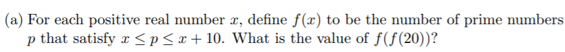
First, there are \(2\) primes between \(20\) and \(30\), so \(f(20) = 2\). Then \(f(f(20)) = f(2)\). There are \(5\) primes between \(2\) and \(12\) inclusive, hence, \(f(2) = 5\). Thus, \(f(f(20)) = 5\).
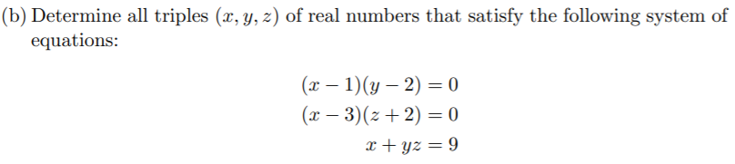
For the first equation, either \(x = 1\) or \(y = 2\). If \(x = 1\), then in the second equation, since \(x \ne 3\), \(z = -2\). Substituting \(x\) and \(z\) in the third equation yields \(y = -4\).
If \(y = 2\) in the first equation, then either \(x = 3\) or \(z = -2\) in the second equation. If \(x = 3\), then substitution yields \(z=3\). If \(z = -2\), then \(x = 13\). Thus the triples are \((1, -4, -2)\), \((3, 2, 3)\), and \((13, 2, -2)\).
Problem 6
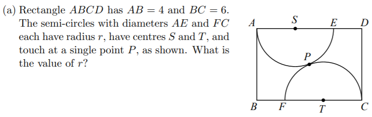
First, \(ST = 2r\), \(AS = r\), and \(BT = 6 - r\). Now, let \(G\) be the point on \(BC\) such that \(SG\) is perpendicular to \(BC\). Now, \(GT = BT - BG = BT - AS = 6 - 2r\). By pythagorean theorem in triangle \(SGT\), \(4^2 + (6-2r)^2 = (2r)^2 \implies r=\) \(13 \over 6\).
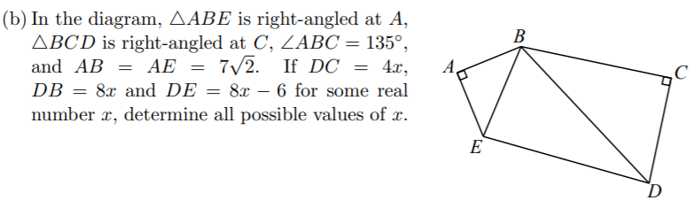
Triangle \(ABE\) is a right isosceles triange, so \(\angle ABE = 45^\circ \), and \(BCD\) is a \(30^\circ - 60^\circ - 90^\circ\) triangle, with \(\angle CBD = 30^\circ\). Now, \(\angle EBD = 135^\circ - 45^\circ - 30^\circ = 60^\circ\), and \(BE = AB\sqrt 2 = 14\). By law of cosines in triangle \(EBD\), \((8x-6)^2 = 14^2 + (8x)^2 - 2(14)(8x) * cos(60^\circ) \implies x = 10\).
Problem 7
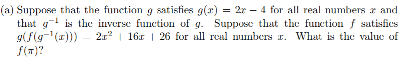
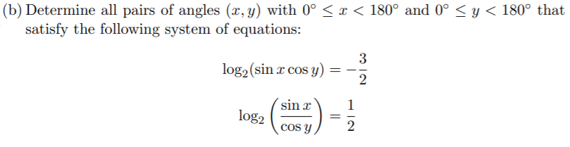
Problem 8
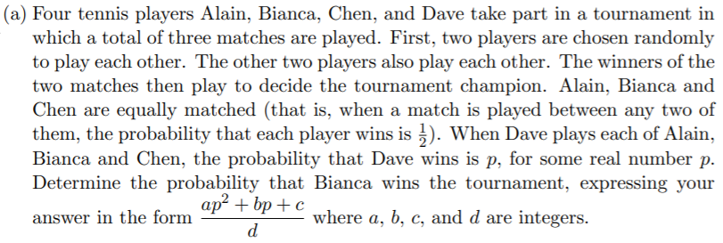
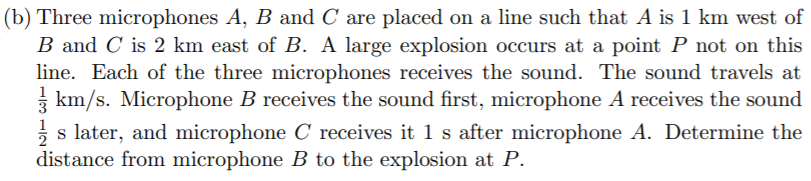